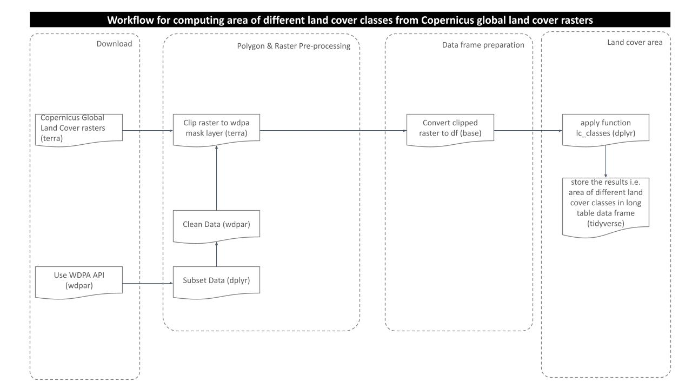
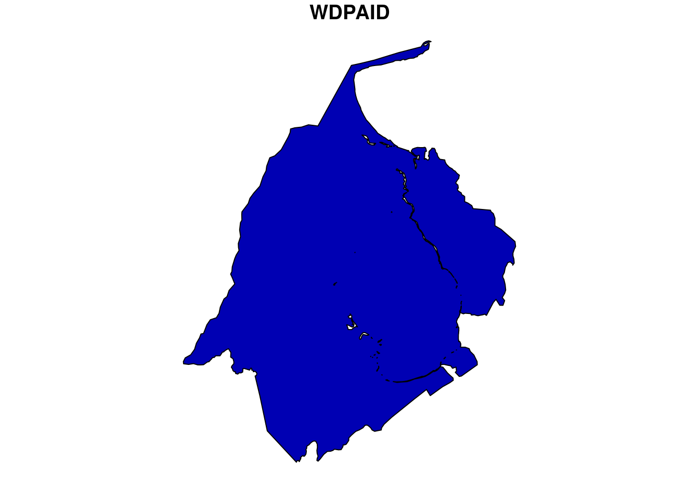
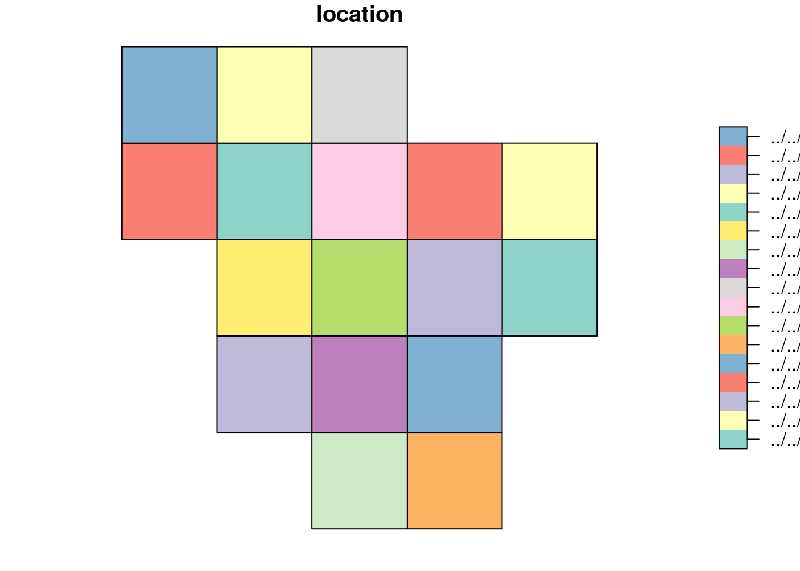
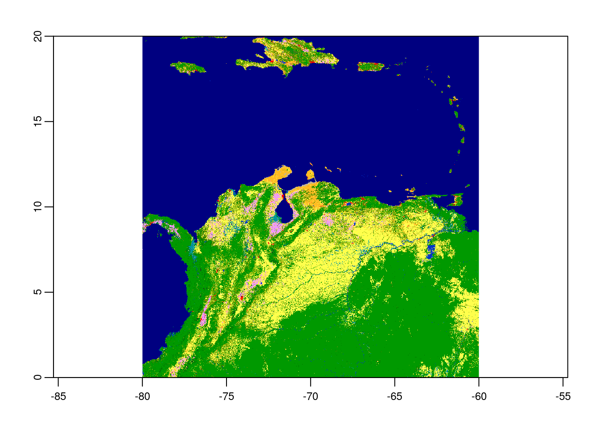
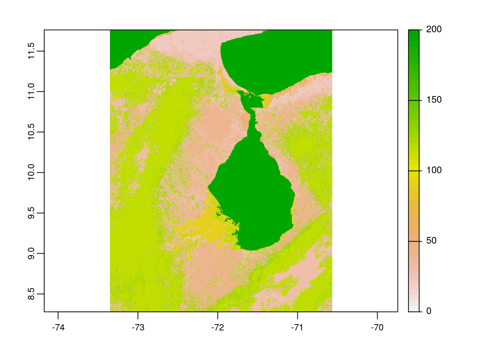
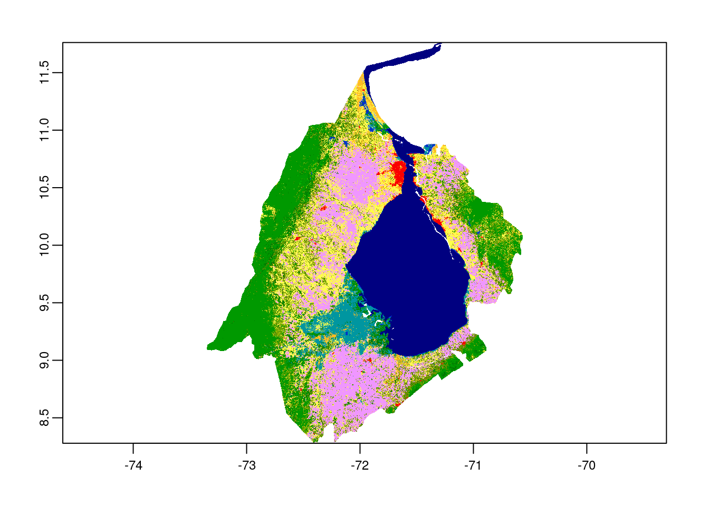

Last updated: 2021-06-30
Checks: 6 1
Knit directory: mapme.protectedareas/
This reproducible R Markdown analysis was created with workflowr (version 1.6.2). The Checks tab describes the reproducibility checks that were applied when the results were created. The Past versions tab lists the development history.
The R Markdown file has unstaged changes. To know which version of the R Markdown file created these results, you’ll want to first commit it to the Git repo. If you’re still working on the analysis, you can ignore this warning. When you’re finished, you can run wflow_publish to commit the R Markdown file and build the HTML.
Great job! The global environment was empty. Objects defined in the global environment can affect the analysis in your R Markdown file in unknown ways. For reproduciblity it’s best to always run the code in an empty environment.
The command set.seed(20210305) was run prior to running the code in the R Markdown file. Setting a seed ensures that any results that rely on randomness, e.g. subsampling or permutations, are reproducible.
Great job! Recording the operating system, R version, and package versions is critical for reproducibility.
Nice! There were no cached chunks for this analysis, so you can be confident that you successfully produced the results during this run.
Great job! Using relative paths to the files within your workflowr project makes it easier to run your code on other machines.
Great! You are using Git for version control. Tracking code development and connecting the code version to the results is critical for reproducibility.
The results in this page were generated with repository version 4387c09. See the Past versions tab to see a history of the changes made to the R Markdown and HTML files.
Note that you need to be careful to ensure that all relevant files for the analysis have been committed to Git prior to generating the results (you can use wflow_publish or wflow_git_commit). workflowr only checks the R Markdown file, but you know if there are other scripts or data files that it depends on. Below is the status of the Git repository when the results were generated:
Ignored files:
Ignored: .Rproj.user/
Unstaged changes:
Modified: analysis/copernicus-land-cover.rmd
Modified: code/copernicus-land-cover.R
Note that any generated files, e.g. HTML, png, CSS, etc., are not included in this status report because it is ok for generated content to have uncommitted changes.
These are the previous versions of the repository in which changes were made to the R Markdown (analysis/copernicus-land-cover.rmd) and HTML (docs/copernicus-land-cover.html) files. If you’ve configured a remote Git repository (see ?wflow_git_remote), click on the hyperlinks in the table below to view the files as they were in that past version.
| File | Version | Author | Date | Message |
|---|---|---|---|---|
| html | 6577989 | Ohm-Np | 2021-05-14 | minor updates on docs/html |
| Rmd | 825cd77 | Ohm-Np | 2021-05-14 | create copernicus land cover rmd |
# load required libraries
library("terra")
library("sf")
library("wdpar")
library("dplyr")
library("rmarkdown") # only used for rendering tables for this website
starttime<-Sys.time() # mark the start time of this routine to calculate processing time at the endAt first you might want to load the source functions for this routine.
source("code/copernicus-land-cover.R")The actual surface cover of ground is known as Land Cover. The land cover data shows us how much of the region is covered by forests, rivers, wetlands, barren land, or urban infrastructure thus allowing the observation of land cover dynamics over a period of time. There are many products available for the analysis of global land cover classes, however, the European Union’s Earth Observation programme called as Copernicus provides high quality, readily available land cover products from year 2015 to 2019 free of cost for the public use.
Here, in this analysis we are going to compute the area of land cover classes within the region of interest from the rasters downloaded from Copernicus Land Cover Viewer.
The purpose of this analysis is to compute area of different land cover classes present in the polygon of interest. In order to get the results, we need to go through several steps of processing as shown in the routine workflow:

For this analysis, we would choose one WDPA polygon from the country Venezuela. We can download the WDPA polygons from the package wdpar and then filter out the desired polygon using WDPAID with package dplyr.
We will then reproject the downloaded polygon sample to WGS84 to match with the raster data. Since, we are using package terra for raster processing, so it is necessary to load the sample polygon as spatVector.
# load sample WDPA polygon from country: Venezuela
ven <- wdpa_fetch("VEN")%>%
filter(WDPAID %in% 555705224)
# reproject to the WGS84
ven <- st_transform(ven,
"+proj=longlat +datum=WGS84 +no_defs")
# load as spatVector for terra compatiility
ven_v <-
vect(ven)
# plot the PA polygon
plot(ven[1])
| Version | Author | Date |
|---|---|---|
| 6577989 | Ohm-Np | 2021-05-14 |
The 20X20 gridded copernicus global land cover rasters were downloaded to cover the extent of Latin America for years 2015 to 2019. For this analysis section, we will be processing land cover statistics for the year 2015.
As we already prepared the polygon data, we need to load the rasters which intersects with our polygon of interest. To make the thing easier, we used function gdaltindex from package gdalUtils to get the index shapefiles of the land cover rasters, which are stored in datalake. Thus, we are going to crop the index polygon with our PA polygon of interest.
# load index shapefile for the year 2015
index <-
read_sf("../../datalake/mapme.protectedareas/processing/copernicus_land_cover/raster_index/raster_index_2015.shp")
# transform to wgs84
index <- st_transform(index,
"+proj=longlat +datum=WGS84 +no_defs")Lets have a look at how does the index polygon looks like:
plot(index)
From the plot, we can see that the index polygon covers the entire Latin America on 20*20 grids. In order to load the required rasters, we need to intersect the index polygon and the WDPA polygon.
# crop the index with wdpa polygon
ven_crop <- st_crop(index,
ven)
# check the number of rasters having intersection with the polygon
n <- nrow(ven_crop)
n[1] 1Hence, the polygon we selected intersects only with the one land cover raster.
Note: We are using two object types of same polygon i.e. ven which is sf object and is used when applying sf function st_crop and another one is ven_v which is terra object and will be used while performing crop and mask functions from the package terra.
Now the raster file is loaded to the working directory as the layer name lc as class object ‘SpatRaster’.
# view raster metadata
lc <-
rast(ven_crop$location)
# plot the raster
plot(lc)
Since we already loaded raster and polygon successfully to our workspace, we can now perform further processing that would be to clip the raster layer by the selected shapefile polygon both by its extent and mask layer. Crop returns the raster to its bounding box whereas mask returns the raster to defined vector polygon layer.
# crop raster by polygon
ven_crop <- terra::crop(lc,
ven_v)
# plot the cropped raster layer
plot(ven_crop)
| Version | Author | Date |
|---|---|---|
| 6577989 | Ohm-Np | 2021-05-14 |
# mask the raster by polygon
ven_mask <- terra::mask(ven_crop,
ven_v)
# plot the masked raster layer
plot(ven_mask)
| Version | Author | Date |
|---|---|---|
| 6577989 | Ohm-Np | 2021-05-14 |
The next step would be to prepare the data frame. First, we would load the raster values from masked raster layer to the data frame named df.ven. Then, replace the column name containing raster values to value with the use of new data frame called df.new.
# raster values as dataframe
df.ven <-
as.data.frame(ven_mask)
# new dataframe with value column
df.new <- data.frame(value=NA)
# rename column to match with new df
colnames(df.ven) <-
colnames(df.new)
# check the columns with values of the prepared dataframe
head(df.ven) value
2071 200
2072 200
2073 200
2074 200
2075 200
2076 200Similarly, we will prepare new data frame with only WDPAID to receive the final results.
# empty data frame to receive results
df.final <-
data.frame(WDPAID=555705224)To carry out the final and main step of this analysis i.e. to compute the area of land cover classes, expanse function from the package terra would be used. We first compute the area of the masked raster layer ven_mask in square kilometer (sqkm). Then, we calculate the area in sqkm for single row of the data frame df.ven.
# area of masked raster in km
area_sqkm <- terra::expanse(ven_mask,
unit="km")
# area per row of dataframe
area_sqkm_per_cell <-
area_sqkm/nrow(df.ven)Finally, we call the function lc_clases from the sourced script copernicus-land-cover.R which takes the data frame df.ven as argument and returns another data frame data.final in long table format with the area of individual land cover classes.
# call the function lc_classes and receive the result for year 2019
df.final_2015 <- lc_classes(df.ven,
2015)
# view the resulting data
paged_table(df.final_2015)So, for a single polygon for the year 2015, we computed the area of each land cover classes present in the polygon. We can see that among 23 discrete classes, the polygon we used consists of eight different classes with open forest comprising the largest area of the polygon.
Similarly, to compute the land cover statistics for the year 2019, follow these steps:
load index polygon for year 2019 - crop index polygon with pa polygon - load the respective rasters - follow the routine
In order to carry out land cover change analysis, we can load raster layer for another year of which we want to see the changes in the area of land cover classes and then finally subtract the area from the respective years.
Note: If the polygon of interest intersects with multiple rasters, we have two methods to get the land cover statistics:
1. load all rasters - merge them into one single raster using terra:merge - follow the processing routine - compute land cover statistics
2. load individual raster - follow the processing routine - get land cover stats for individual rasters - aggregate the results
In the end we are going to have a look how long the rendering of this file took so that people get an idea about the processing speed of this routine.
stoptime<-Sys.time()
print(starttime-stoptime)Time difference of -9.911937 secs[1] Buchhorn, M. ; Smets, B. ; Bertels, L. ; De Roo, B. ; Lesiv, M. ; Tsendbazar, N. - E. ; Herold, M. ; Fritz, S. Copernicus Global Land Service: Land Cover 100m: collection 3: epoch 2019: Globe 2020. DOI 10.5281/zenodo.3939050
[2] Buchhorn, M. ; Smets, B. ; Bertels, L. ; De Roo, B. ; Lesiv, M. ; Tsendbazar, N. - E. ; Herold, M. ; Fritz, S. Copernicus Global Land Service: Land Cover 100m: collection 3: epoch 2018: Globe 2020. DOI 10.5281/zenodo.3518038
[3] Buchhorn, M. ; Smets, B. ; Bertels, L. ; De Roo, B. ; Lesiv, M. ; Tsendbazar, N. - E. ; Herold, M. ; Fritz, S. Copernicus Global Land Service: Land Cover 100m: collection 3: epoch 2017: Globe 2020. DOI 10.5281/zenodo.3518036
[4]Buchhorn, M. ; Smets, B. ; Bertels, L. ; De Roo, B. ; Lesiv, M. ; Tsendbazar, N. - E. ; Herold, M. ; Fritz, S. Copernicus Global Land Service: Land Cover 100m: collection 3: epoch 2016: Globe 2020. DOI 10.5281/zenodo.3518026
[5] Buchhorn, M. ; Smets, B. ; Bertels, L. ; De Roo, B. ; Lesiv, M. ; Tsendbazar, N. - E. ; Herold, M. ; Fritz, S. Copernicus Global Land Service: Land Cover 100m: collection 3: epoch 2015: Globe 2020. DOI 10.5281/zenodo.3939038
sessionInfo()R version 3.6.3 (2020-02-29)
Platform: x86_64-pc-linux-gnu (64-bit)
Running under: Ubuntu 18.04.5 LTS
Matrix products: default
BLAS: /usr/lib/x86_64-linux-gnu/blas/libblas.so.3.7.1
LAPACK: /usr/lib/x86_64-linux-gnu/lapack/liblapack.so.3.7.1
locale:
[1] LC_CTYPE=C.UTF-8 LC_NUMERIC=C LC_TIME=C.UTF-8
[4] LC_COLLATE=C.UTF-8 LC_MONETARY=C.UTF-8 LC_MESSAGES=C.UTF-8
[7] LC_PAPER=C.UTF-8 LC_NAME=C LC_ADDRESS=C
[10] LC_TELEPHONE=C LC_MEASUREMENT=C.UTF-8 LC_IDENTIFICATION=C
attached base packages:
[1] stats graphics grDevices utils datasets methods base
other attached packages:
[1] forcats_0.5.1 stringr_1.4.0 purrr_0.3.4 readr_1.4.0
[5] tidyr_1.1.3 tibble_3.1.2 ggplot2_3.3.4 tidyverse_1.3.1
[9] rmarkdown_2.6 dplyr_1.0.6 wdpar_1.0.6 sf_1.0-0
[13] terra_1.2-15
loaded via a namespace (and not attached):
[1] httr_1.4.2 jsonlite_1.7.2 modelr_0.1.8 assertthat_0.2.1
[5] countrycode_1.2.0 sp_1.4-5 cellranger_1.1.0 yaml_2.2.1
[9] pillar_1.6.1 backports_1.2.1 lattice_0.20-44 glue_1.4.2
[13] digest_0.6.27 promises_1.2.0.1 rvest_1.0.0 colorspace_2.0-1
[17] htmltools_0.5.1.1 httpuv_1.6.1 pkgconfig_2.0.3 broom_0.7.6
[21] raster_3.4-10 haven_2.3.1 s2_1.0.5 scales_1.1.1
[25] whisker_0.4 later_1.2.0 git2r_0.28.0 proxy_0.4-26
[29] generics_0.1.0 ellipsis_0.3.2 withr_2.4.2 cli_2.5.0
[33] magrittr_2.0.1 crayon_1.4.1 readxl_1.3.1 evaluate_0.14
[37] fs_1.5.0 fansi_0.5.0 xml2_1.3.2 class_7.3-19
[41] tools_3.6.3 hms_1.0.0 lifecycle_1.0.0 munsell_0.5.0
[45] reprex_2.0.0 compiler_3.6.3 e1071_1.7-7 rlang_0.4.11
[49] classInt_0.4-3 units_0.7-2 grid_3.6.3 rstudioapi_0.13
[53] rappdirs_0.3.3 wk_0.4.1 gtable_0.3.0 codetools_0.2-18
[57] DBI_1.1.1 curl_4.3.1 R6_2.5.0 lubridate_1.7.10
[61] knitr_1.30 utf8_1.2.1 workflowr_1.6.2 rprojroot_2.0.2
[65] KernSmooth_2.23-20 stringi_1.6.2 Rcpp_1.0.6 vctrs_0.3.8
[69] dbplyr_2.1.1 tidyselect_1.1.1 xfun_0.20